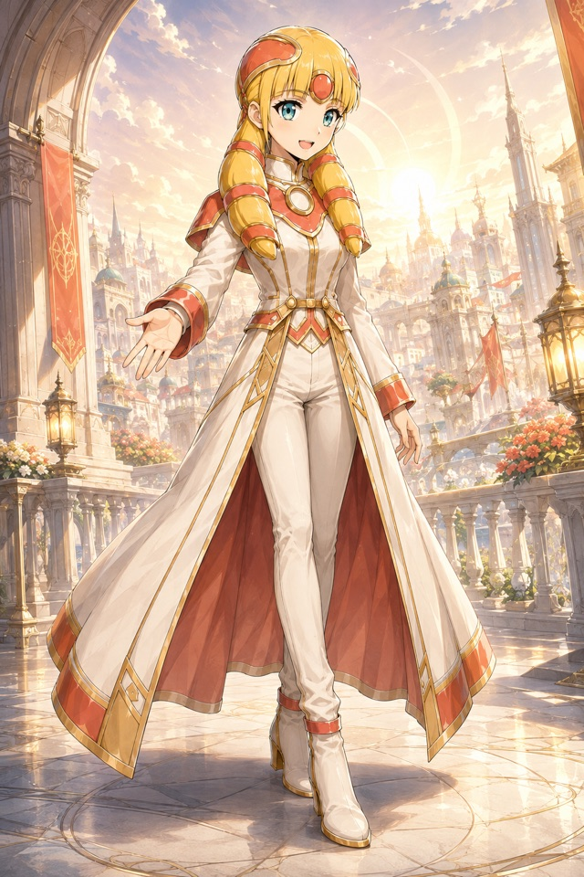

FANTASY · FIRST JOURNEY
ディア・カルマ
旅人として声をかけ、一つ手を貸すところから。
最初のひとこと
古街道の折れた道標のそばで、負傷した使者が泥の中の記録片へ手を伸ばしています。遠くに蹄の音。まだ、誰が来るかは分かりません。
1：「手を貸そうか」と声をかける 2：記録片を拾う
旅人の名前や経歴は不要です。一言から、最初の手助けを始められます。
開始テキストを受け取る作例ノベルを読む
V2 CHARACTER CARD
アイリス・ヴェイル
可能性を先に見て実現方法を探す、フリーギルドの双子統治者「灯」。
V2カードを保存公開用ダウンロード候補です。公式住民登録・共有史の確定は含みません。
自分のAIで始める
- 開始テキストを保存する。
- 普段使っているAIの新しい会話へ添付、または全文を貼り付ける。
- 「始めて」と伝え、最初の問いに一言返す。
このページ自体はAIを呼び出しません。AIサービスの利用条件・料金が適用されます。困ったら「IZK: HELP」、終えるなら「今日は終わり」と伝えられます。